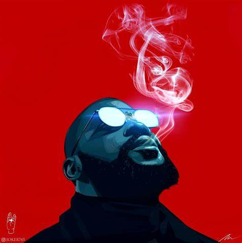
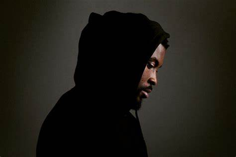

ACCUEIL
Qui est Damso ?
Damso, de son vrai nom William Kalubi Mwamba, né le 10 mai 1992 à Kinshasa (Zaïre, actuelle République démocratique du Congo), est un rappeur et auteur-compositeur-interprète belgo-congolais. Actif dans le monde du rap depuis 2006, Damso débute dans la publication de projets avec sa première mixtape Salle d'attente, sortie en 2014. Il voit sa carrière vraiment décoller en 2015, lorsqu'il est repéré par Booba. Il intègre alors le collectif et label 92i, et signe chez Universal Music France. Il est aussi connu pour son appartenance à la nouvelle vague du rap belge des années 2010 avec des artistes tels que Hamza ou Shay
Biographie
William Kalubi Mwamba débute sa vie dans un climat hostile. Il vit une enfance difficile dans sa ville de naissance à Kinshasa en République Démocratique du Congo. Les combats sont quotidiens pendant la guerre. Il se trouvait avec sa famille dans le quartier de la Gombé. "Il y avait des tirs de tous les côtés, des viols et des pillages”. En pleine nuit, il a dû fuir avec seulement quelques affaires pour se mettre en sécurité dans un petit appartement du même quartier. “Je ne comprenais pas ce qu'il se passait. Mon père nous a sauvé la vie.” (interview Clique 3 octobre 2020).
Un de ses frères a même perdu un oeil, d’où la future punchline “Mon frère est borgne il n’a plus qu’un oeil, suffit d’un seul a dit l’illuminati” dans LIFE LIFE.
Damso est témoin de la mort très jeune. A l’âge de 8 ans à peine, un homme s’est fait tué sous ses yeux.
"J'ai entendu le bruit de la balle de kalash qui traverse un corps. Je n'avais aucune émotion. Je me disais qu’on allait mourir”.
La mort sera un sujet qu’il abordera d’ailleurs très souvent dans ses textes.

“Mais c'est quoi la vie, si ce n'est la mort que l'on nous accorde pour être en vie” dans Ipséité ou “C'que j'aime chez la mort, c'est qu'elle ment pas. Elle voit un truc qu'elle aime bien, elle prend et elle le rend pas”dans J’avais juste envie d’écrire. En s’exilant en Belgique à Kraainem à l’âge de 9 ans, Damso est directement confronté au racisme. Il se passionne pour le rap en le découvrant grâce à son grand frère, et commence à se lancer vers l’âge de 13 ans.
Après une discussion marquante avec sa mère, Damso décide de partir de chez lui, car il ne souhaitait plus aller en fac de psycho et de marketing. Il se demande donc à partir de combien d’argent il peut vivre sans étudier. Cette période a été un déclic : il a décidé qu’il voulait faire de l’argent et percer. Il monte un plan de carrière bien défini et s'entraîne à se faire des interviews avec lui-même. Damso devient ensuite SDF. Il loge dans la gare du midi à Bruxelles ou dans des squats. A 22 ans, il déménage au quartier congolais de Matonge dans la commune d’Ixelles. Il plonge dans le chômage, le trafic de drogue, l’alcoolisme et la fréquentation de prostituées.
En 2017, il devient père d'un garçon prénommé Lior. En 2020, il lui dédie le morceau Deux toiles de mer, qui est l'un des plus gros succès de son album QALF. Une note vocale de ce dernier est présente dans le morceau. Il est séparé de la mère de son fils, comme évoqué dans le morceau. Il dédie également une lettre ouverte à son fils sous un post Instagram qui a beaucoup ému ses fans.

Booba le repère et lui propose de participer à sa mixtape OKLM. Damso connaît un succès sur Poséïdon et sera ensuite invité sur le morceau Pinocchio. C’est à partir de là qu’il se fait connaître du grand public et que tout s’accélère. Son vécu, c’est aussi ce qui fait la force de sa plume. “Je crois que le dark c’est ma forme d’écriture”. On retrouve son coeur brisé dans ses paroles profondes, mais aussi trash. Le morceau Amnésie , qui traite du suicide, montre une énorme cicatrice. Plus tard il rencontre de nouvelles difficultés dans la période de transition de Lithopédion à QALF : sa mère tombe gravement malade et les médicaments sont très chers. «C’était son anniversaire et j’ai pas été la voir. Il fallait que je cartonne pour faire de l’argent » interview Clique.
Damso est donc passé de SDF à une des stars les plus populaires du rap francophone. Avec sa détermination, il a réussi son pari d’arriver au sommet grâce à sa passion. Signé sous les labels Capitol et Universal, il crée ensuite son propre label, Trente-quatre Centimes , en 2020. “Il y a un bon nombre de fois où j’aurais pu arrêter mais je ne l’ai pas fait”.